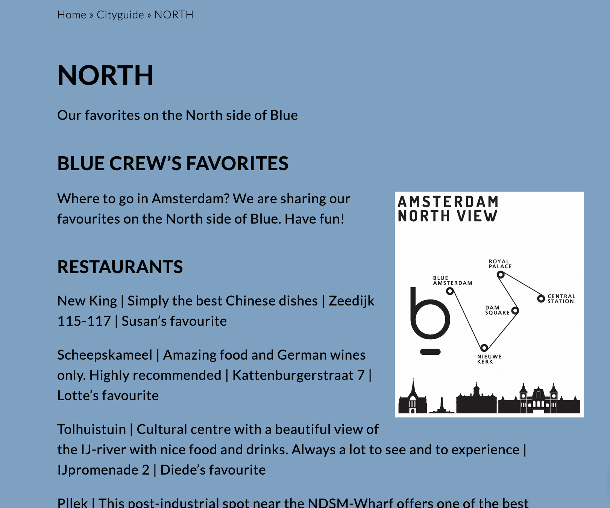
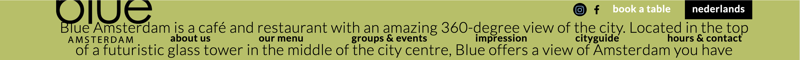
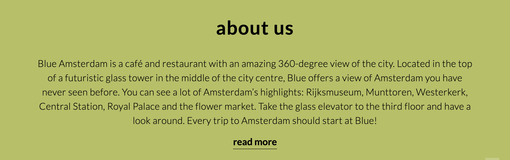
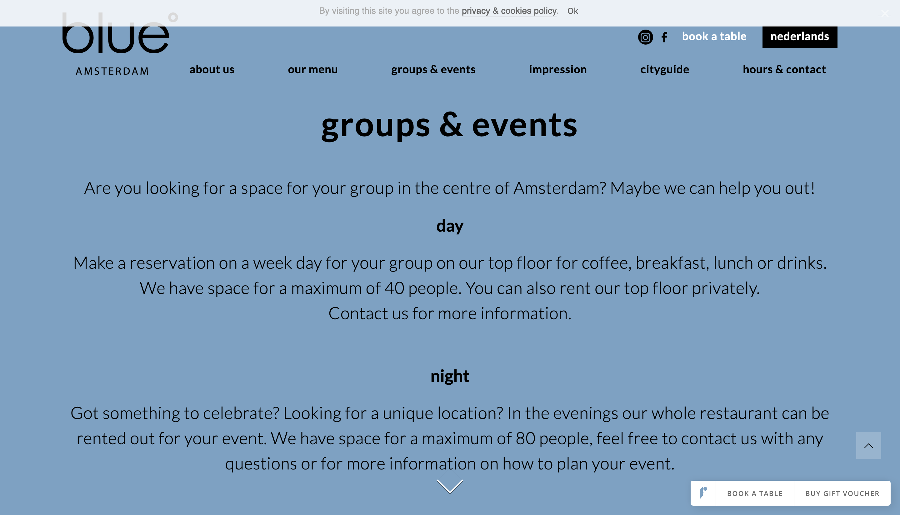
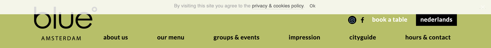
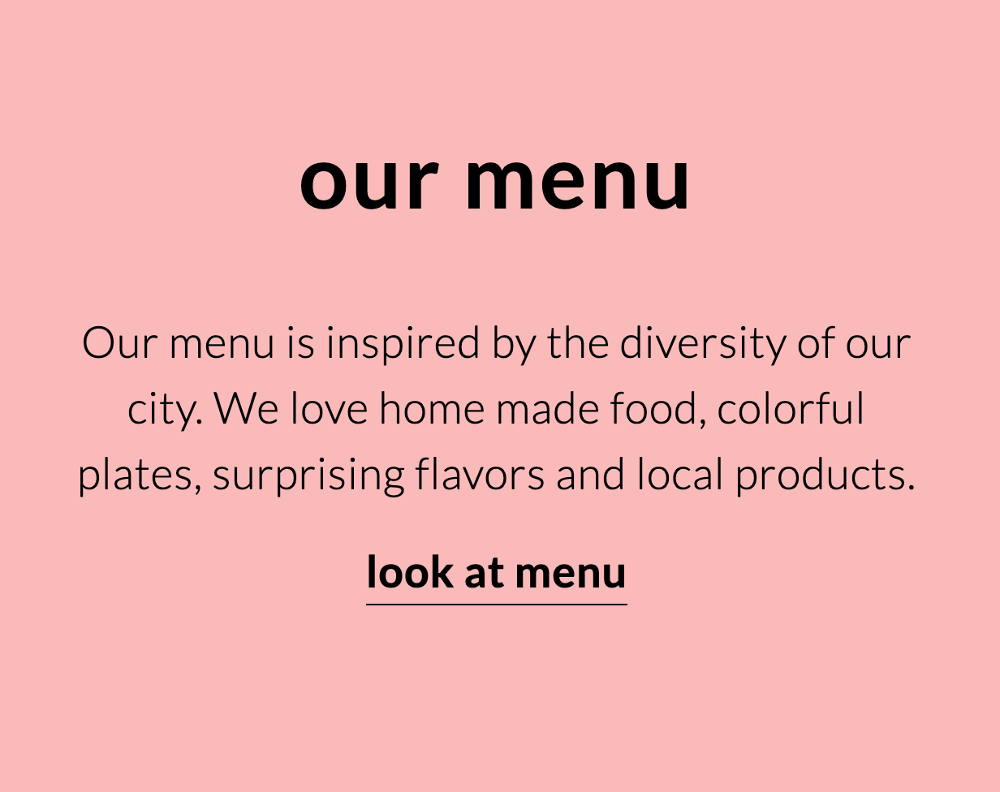
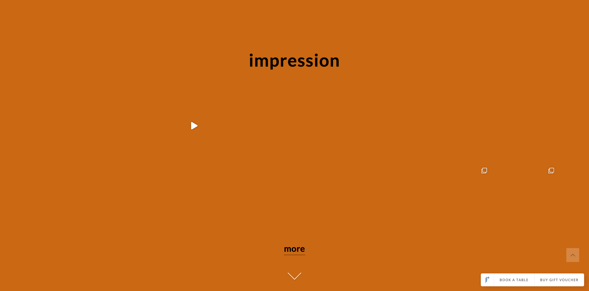

Website Review: Blue Amsterdam
Posted by iteration 34,65,73,579 of "We"Here, we review the website of Blue Amsterdam.
1. Layout
There are no pages as much as there are sections on the same page. Clicking on elements of the navigation auto-scrolls to a section on the home page itself. These sections are either text only or are split between text and image elements. Clickable elements in those sections, either reveal previously hidden information or trigger a pop-up.
There are separate pages which contain suggestions about different restaurants, cafés, and bars around Amsterdam. This has one main section listing the suggested places.
Overall, the layout is comprehensive.
2. Scannability
There are not many levels in the hiearchy in the content, only the logo, the headings and the main text. Text has high kerning and is large. there is very little content to begin with, making it easy to read. However, their list of interesting place in Amsterdam is not in list form. This further decreases readability
Links are obvious, if sometimes inconsistent. Some have hover states while others do not. On scrolling, the text of the navigation bar clashes with the main text, which decreases readability.
Thus, the site's scannability is average.
3. Happy Talk
There is very little happy talk. The text of the website is succinct and to the point. For example, their "about us" section briefly answers what Blue is and why viewers should care.
4. Keywords
Each section and page contains the keywords representing it in the navigation bar. These keywords are displayed as headings.
5. Design Noise
There are little to no distracting design elements, the website is minimalistic. It is Bold, blocky, pastel, and has no borders.
6. Navigation
The navigation is pretty user friendly. "about us", "our menu", "groups & events", and "hours & contact" are self-evident. "impression" and "cityguide" seem a bit vague but on clicking become clear.
7. Clickability
All clickable elements are underlined. No other text is underlined. Thus, they have good clickability.
7. Purpose
With no prior context, a couple of seconds of scanning reveals that Blue Amsterdam is a restaurant. There is a logo but not tagline, thus there is no clear indication of a goal. There are "teases" in the form of pictures from the restaurant scrolling in a showcase.

Their selling point seems to be the view that the glass building the restaurant is housed in, affords. This may be clearer if they had a tagline that conveyed this with brevity.
Other Improvements
Their "impressions" section contains clickable embedded elements from their instagram page. However, They do not load at all. Future updates should look into fixing that.
Furthermore, some of their external links open in the same tab, rather than a new tab. To keep users on their website, opening this link on a new tab might be better.